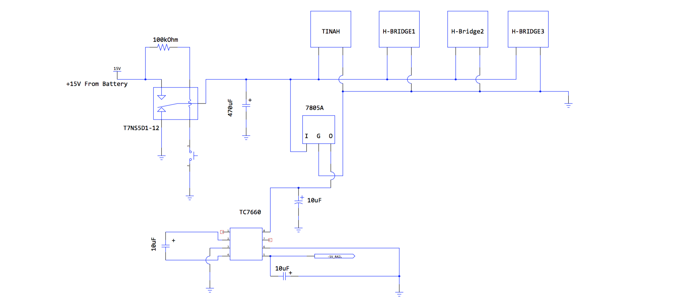
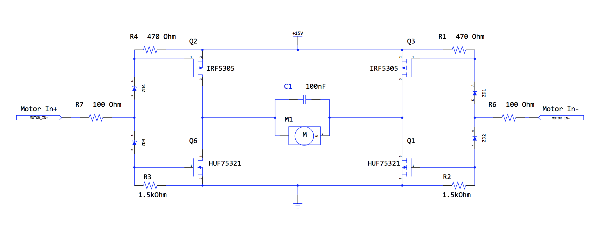

Electronics Overview
All electronic systems on the robot are designed to be simple and modular in order to allow for a system that is easily built, easily serviceable, and easy to troubleshoot.
There were 3 main types of circuits used on this robot. These were: infrared signal processing circuits, a power distribution circuit, and H-Bridge motor driver circuits. Additionally, we used simple signal debouncing circuits to process the signals coming from the various contact switches used on the robot. A rotary potentiometer was used to provide position feedback for our main arm, and infrared phototransistors were used to help the robot navigate the course.
All of the circuits and sensing systems on the robot interact with each other through the TINAH board – a microcontroller board built specifically for the Engineering Physics 253 course.
Infrared Sensor Circuit
In order to be able to navigate the upper portion of the course, where pets 5 and 6 are placed, our robot needs to be able to detect and measure the signal being emitted by 10kHz Infrared beacons. QSD124 IR phototransistors were used in order to sense the IR signal. The raw signal was passed through a DC block circuit, then various amplification and filtering circuits, and eventually through a peak detecting circuit in order to obtain a DC voltage signal that could be processed by our TINAH board. In this circuit, we used 3 band pass filters in series to steepen the slope of the bode plot on either side of the 10kHz frequency mark, allowing us to detect only these signals. We have chosen component values such that each filter has a gain of 2 and the signal strength is not diminished by the inclusion of the extra band-pass filters. Please refer to the figure below.

Power Distribution Circuit
In order to provide our robot's various circuits with the proper supply voltages, we created a circuit dedicated to providing +15V, GND, +5V, and -5V voltage rails. This circuit also allows for the entire power of the robot to be controlled with one switch acting through relay.
H-Bridge Motor Driver Circuit
In order to drive our 2 rear drive wheels, and the motor used to rotate our main arm, we used the H-Bridge circuit shown below. This circuit was designed by our teaching assistant Scott Lawson.
